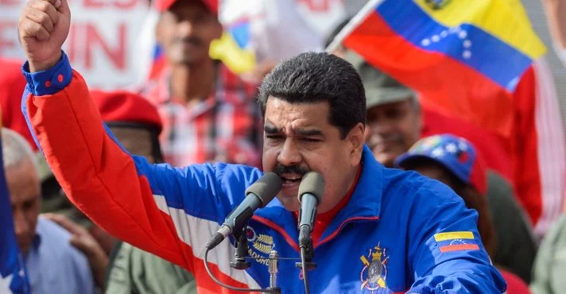

Ucrânia ataca Moscou em maior ofensiva desde o início da guerra
A Ucrânia realizou um ataque contra Moscou nesta 4ª feira
(21.ago.2024). Segundo o Ministério de Defesa da Rússia, 11 drones
sobre a capital russa foram interceptados. As autoridades afirmaram
que a ofensiva contra a região foi uma das maiores desde o início da
guerra em fevereiro de 2022. As informações são da Tass e da Reuters.
O prefeito de Moscou, Sergei Sobyanin, disse em comunicado no Telegram
que não houve vítimas ou danos no local. “A defesa de Moscou tornou
possível repelir com sucesso todos os ataques dos veículos aéreos não
tripulados inimigos”, disse
Não haverá negociações até que Ucrânia seja “completamente derrotada”,
diz ex-presidente Medvedev

Dmitry Medvedev, vice-chefe do conselho de segurança da Rússia, disse
nesta quarta-feira (21) que não haverá negociações entre Moscou e Kiev
até que a Ucrânia seja “completamente derrotada”.
O posicionamento de Medvedev se deu após a incursão da Ucrânia na
região russa de Kursk. “A conversa fiada de intermediários que ninguém
havia nomeado sobre a maravilhosa paz acabou. Todos entendem tudo
agora, mesmo que não digam em voz alta”, escreveu Medvedev no
aplicativo de mensagens Telegram. “Não haverá mais negociações até a
derrota completa do inimigo”, disse.
Supremo Tribunal de Justiça da Venezuela confirma vitória de Maduro

O Supremo Tribunal de Justiça da Venezuela ratificou a vitória do
presidente Nicolás Maduro na eleição presidencial de 28 de julho,
selando o apoio institucional para o partido no poder à medida que a
disputa desfaz-se das manchetes internacionais.
Desde a votação e os protestos mortais contra o governo que se
seguiram, o governo de Maduro tem conduzido o que a oposição, grupos
de direitos humanos e sindicatos têm caracterizado como uma repressão
ao dissenso. As ações incluíram prisões de figuras da oposição e
manifestantes, uma investigação sobre líderes da oposição por
alegadamente incitarem os militares a cometer crimes, a aprovação de
uma lei que endurece as regras sobre ONGs e renúncias forçadas de
funcionários do Estado supostamente apoiando pró-pontos de vista da
oposição. O Supremo Tribunal Federal da Venezuela revisou os
documentos da autoridade eleitoral e concordou que Maduro venceu a
eleição, disse a presidente do tribunal, Caryslia Rodriguez,
acrescentando que a decisão não pode ser apelada. A autoridade
eleitoral disse desde a noite da eleição que Maduro ganhou pouco mais
da metade dos votos, embora não tenha publicado os números completo
Embaixada da Argentina na Venezuela denuncia roubo de US$ 90 mil de
sua conta bancária>
Ouvir notícia 0:00 A Embaixada da Argentina na Venezuela informou,
nesta quarta-feira (21), às autoridades de Caracas que o dinheiro que
tinha na sua conta bancária foi roubado, segundo disse à CNN uma fonte
com conhecimento do caso.
Detectado o furto, a representação diplomática pediu explicações ao
banco e formalizou a denúncia, acrescentou a fonte. Ele disse que o
valor extraído é de US$ 90 mil. A CNN solicitou informações à
Procuradoria-Geral da Venezuela sobre o assunto. O evento ocorre ao
mesmo tempo em que existe uma relação tensa entre os governos dos dois
países. O presidente da Argentina, Javier Milei, e o da Venezuela,
Nicolás Maduro, trocaram acusações e ofensas nos últimos meses,
especialmente após as eleições presidenciais de 28 de julho na
Venezuela.